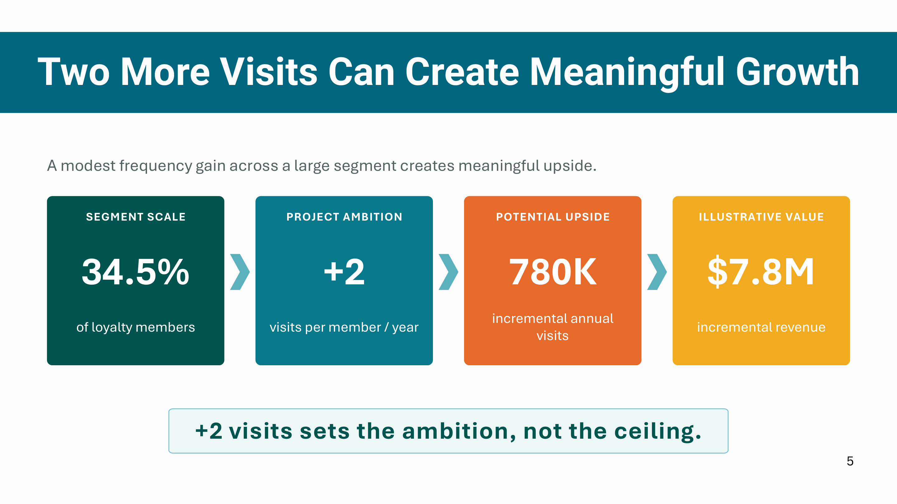
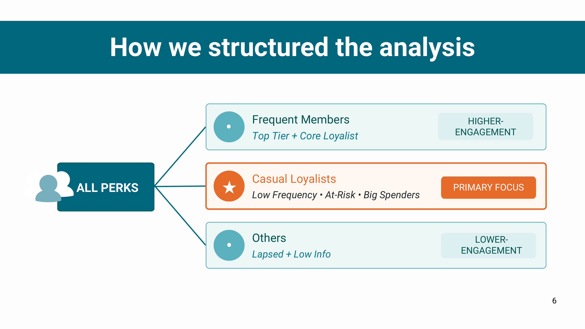

Case study · Caribou Coffee
How can Caribou increase visit frequency among Casual Loyalists?

Project overview
Caribou had a large loyalty base, but a fragmented understanding of which customer behaviors actually drove repeat visits. This project examined member engagement patterns, lifetime value dynamics, and digital ordering behavior to identify the highest-leverage opportunities for increasing visit frequency among Casual Loyalists.
My role was to combine transactional analysis, research synthesis, and strategic framing into a practical recommendation engine for retention and CRM planning.
Business challenge
The challenge was to better understand which behaviors were most likely to convert casual loyalty into repeat visits, while also determining which segments should be prioritized for campaign investment and experimentation.
- Diagnose the drivers of visit retention across a 2M+ member loyalty base
- Separate demand behavior from household-level value patterns
- Design strategic recommendations that could be executed through CRM, app engagement, and order-ahead programs
My role
I led the analysis across customer behavior, retailer app engagement, and organizational recommendation-building. The work was structured to connect behavioral evidence with strategic action, so executives could see both the “why” and the “what next.”
- Led loyalty data analysis for the Caribou workstream
- Defined the app and order-ahead behavioral hypotheses
- Translated findings into strategic growth themes and campaign concepts
- Partnered across business and customer strategy to align recommendations with execution feasibility
Analytical approach
The project combined a product-level growth lens with a customer-segmentation lens. I used a mix of transactional analytics, behavioral comparisons, and qualitative customer research to uncover which actions had the strongest relationship with repeat visits.
- SQL and R-based analysis of loyalty and transaction data
- Propensity score matching to isolate comparable behavioral cohorts
- Difference-in-differences testing for causal interpretation of engagement patterns
- Secondary research and survey inputs to validate strategic implications
Key findings
High-frequency members were not the only strategic opportunity. The most scalable growth was concentrated among a second tier of Casual Loyalists who were engaged, responsive, and more likely to increase visit frequency when the offer and channel experience matched their behavioral patterns.
- Member value differed significantly by lifecycle stage rather than category spend alone
- Repeat visits were more strongly linked to recency, channel mix, and behavioral cadence than to blanket discounting
- Targeted, behavior-led campaigns were more likely to convert casual engagement into a sustainable loyalty lift
Strategic recommendations
- Prioritize a layered CRM strategy for reactivation, retention, and incremental conversion
- Align offers and messaging to visit behavior and channel preference, rather than generic promotions
- Build a repeat-visit strategy anchored in customer lifecycle stage and digital engagement patterns
Campaign concepts
- Design campaigns around incremental visit recovery and frequency-building behaviors
- Target different customer states with distinct offer types and channel strategies
- Use app and order-ahead moments as an activation lever for previously inactive but engaged members
Impact & outputs
Work samples
Full Strategy Presentation
Selected presentation covering the analytical approach, customer insights, strategic themes, and campaign recommendations.

Analytical Framework
The research and analytical process used to move from transactional data and customer research to validated growth opportunities.
